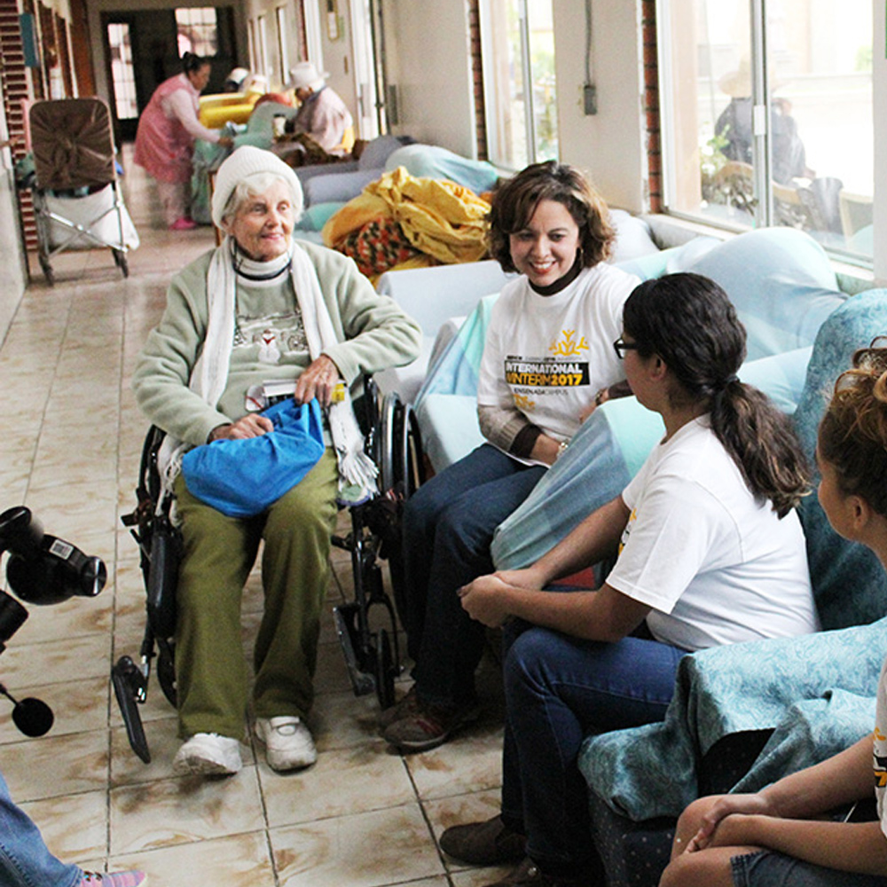
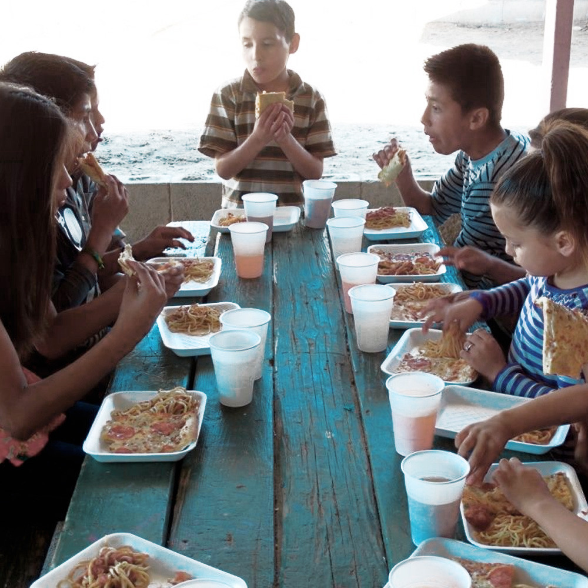
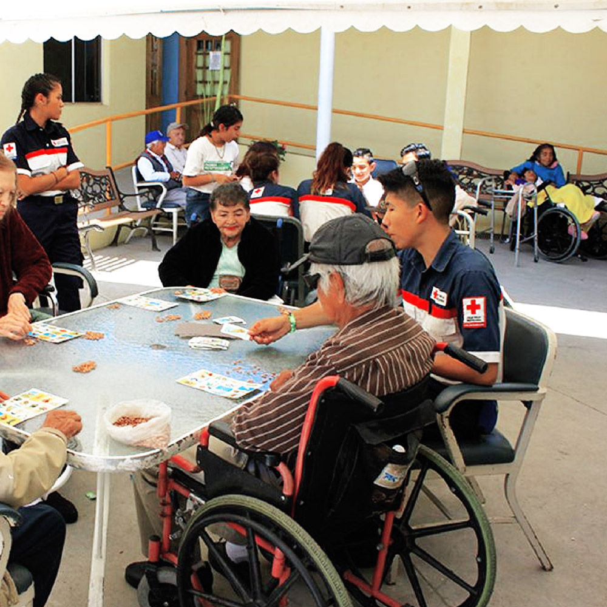
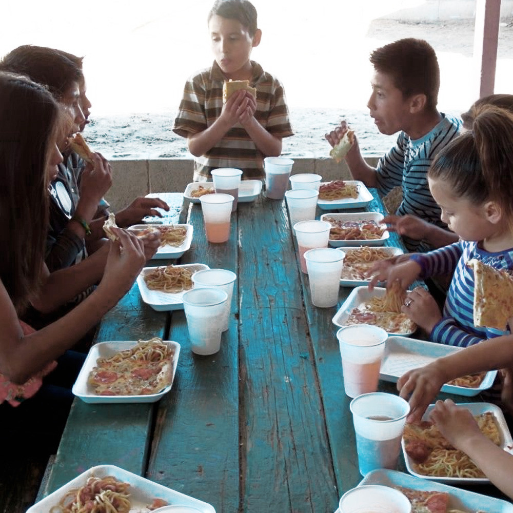
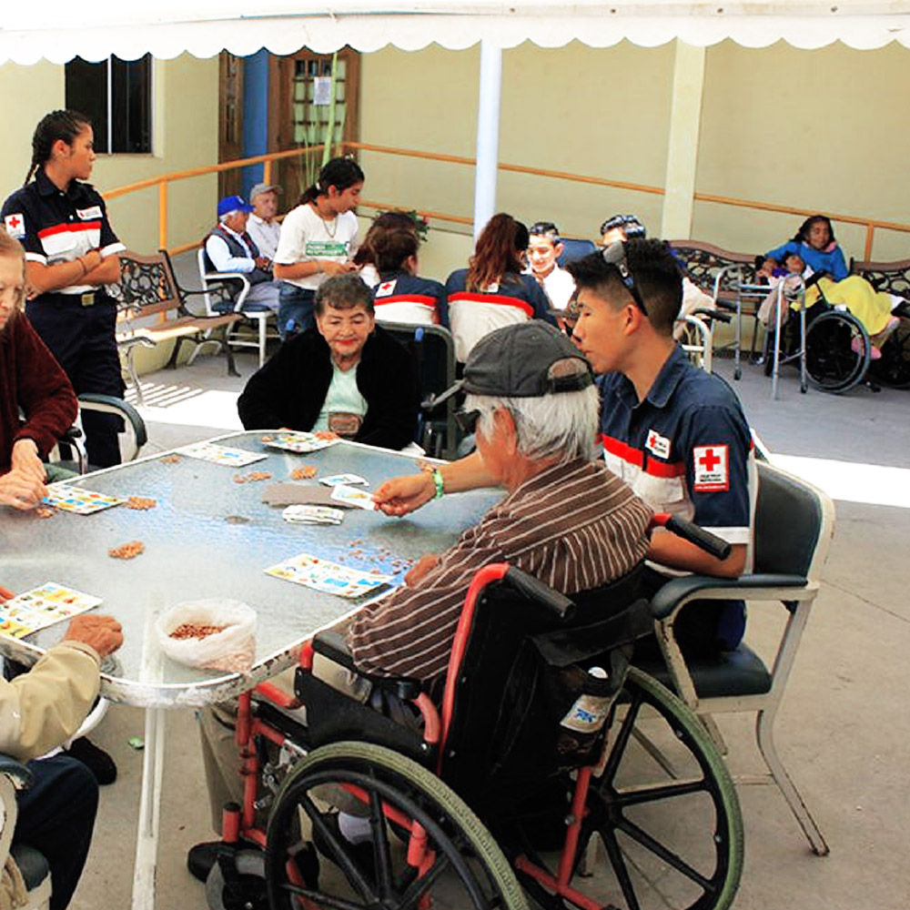

SOBRE MÍ
Ensenada, 19 de Julio de 1990Soy una persona que le gusta la abstracción del mundo real a lo digital, me gusta mucho trabajar con las interfaces de usuario por el transfondo psicológico y de interacción que tienen.
En mi tiempo libre me gusta hacer alguna actividad física como caminar cerca de la playa o irme a zonas de la ciudad lejos del centro para tomar algo de aire fresco. También me gusta ir a donde haya naturaleza, tomar fotografías... ¡y comida! sobre todo la casera o artesanal.
Creo que soy un libro que aún tiene páginas en blanco, listas para que escriba en ella nuevas experiencias.
GALERÍA DE MOMENTOS
- Lugares memorables. Punta Banda Estero, la Lagunita, el jardín de mi casa -
 




FRASES QUE ME MOTIVAN
- "A leader leads by example not by force" -Sun Tzu
- "Mientras vivas, aprende" -Refrán ruso
- “Time is running out” -M. Bellamy
VIDEO QUE ME INSPIRA
The Internet's Own Boy: The Story of Aaron Swartz por Bryan Knappenberger bajo la licencia de CC BY-NC-SA 4.0
Este es uno de mis videos más inspiradores, porque la forma de pensar de Aaron Swartz me cautivó desde que supe de él. El documental es triste por el desenlace que hay, pero aún así me inspira como el se mantuvo apasionado hasta el final, luchando por un bienestar común. Desde ser colaborador en la creación de creative commons, Markdown language, entre otras muchas aportaciones conocidas desconocidas, hasta ser el activista principal para parar la Ley SOPA, movimiento que me tocó ver en internet. D.E.P. Aaron Swartz
MIS LIBROS FAVORITOS
| Libro | Autor |
|---|---|
| De qué hablo cuando hablo de correr | Haruki Murakami |
| El Arte de la Guerra | Sun Tzu |
| The Running Man | Stephen King |